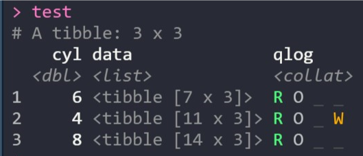

Map complex operations safely or quietly, quickly see the captured side effectsand quickly spot and isolate captured side effects.
The collateral package extends the power of purrr’s side effect-capturing functions, giving you:
- drop-in
map()variants, allowing you to capture side effects from functions mapped over lists, vectors and list-columns; - fancy tibble output, allowing you to see which rows delivered errors or side effects; and
- helpers for summarising side effects or filtering tibbles and lists for present side effects.
If you’re not familiar with purrr or haven’t used a list-column workflow in R before, the collateral vignette shows you how it works, the benefits for your analysis and how collateral simplifies the process of handling complex mapped operations.
If you’re already familiar with purrr, the tl;dr is that collateral::map_safely() and collateral::map_quietly() (and their map2 and pmap variants) will automatically wrap your supplied function in safely() or quietly() and will provide enhanced print()ed output and tibble displays. You can then use the has_*() and tally_*() functions to filter or summarise the returned tibbles or lists.
Example
library(tidyverse)
library(collateral)
test =
# tidy up and trim down for the example
mtcars %>%
rownames_to_column(var = "car") %>%
as_data_frame() %>%
select(car, cyl, disp, wt) %>%
# spike some rows in cyl == 4 to make them fail
mutate(wt = dplyr::case_when(
wt < 2 ~ -wt,
TRUE ~ wt)) %>%
# nest and do some operations quietly()
nest(-cyl) %>%
mutate(qlog = map_quietly(data, ~ log(.$wt)))
test
#> # A tibble: 3 x 4
#> cyl data qlog
#> <dbl> <list> <collat>
#> 1 6 <tibble [7 x 3]> R O _ _
#> 2 4 <tibble [11 x 3]> R O _ W
#> 3 8 <tibble [14 x 3]> R O _ _
collateral uses pillar to style output, so supported terminals will also color the output!
Support
If you have a problem with collateral, please don’t hesitate to file an issue or contact me!
Links
- Download from CRAN at
https://cloud.r-project.org/package=collateral - Browse source code at
https://github.com/rensa/collateral - Report a bug at
https://github.com/rensa/collateral/issues
Developers
-

Author, maintainer